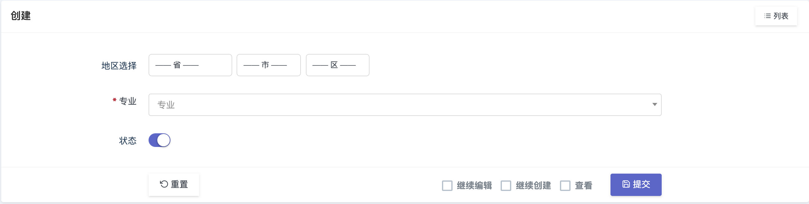

基于Dcat Admin的Sku插件
增强 Dcat Admin 使用体验！在线简化配置、UI优化、字段扩展。
中国省市区三级联动选择组件

在dcat-admin中使用iframe作为页面架构并发布标签页使页面切换无需刷新
简化基于 Dcat-Admin 管理后台的可视化 Redis 管理面板
[1] GitHub 地址 : https://github.com/Abbotton/dcat-sku-plus[2] GitHub 地址 : https://github.com/celaraze/dcat-extension-plus[3] GitHub 地址: https://github.com/dcat-admin/form-step[4] GitHub 地址: https://github.com/super-eggs/dcat-distpicker[5] GitHub 地址: https://github.com/deatil/dcat-login-captcha[6] GitHub 地址: https://github.com/jyiL/crontab-extension[7] GitHub 地址: https://github.com/de-memory/dcat-media-selector[8] GitHub 地址: https://github.com/super-eggs/dcat-log-viewer[9] GitHub 地址: https://github.com/Ghost-die/dcat-config[10] GitHub 地址: https://github.com/mosiboom/dcat-iframe-tab[11] GitHub 地址: https://github.com/andyhuang123/files-manger[12] Gitee 地址: https://gitee.com/dcat-phper/dcat-extension-gallery[13] Gitee 地址: https://gitee.com/dcat-phper/dcat-env[14] Gitee 地址: https://gitee.com/dcat-phper/dcat-composer-viewer[15] Gitee 地址: https://gitee.com/dcat-phper/dcat-admin-sortable[16] Gitee 地址: https://gitee.com/dcat-phper/dcat-server-monitor[17] Gitee 地址: https://gitee.com/dcat-phper/dcat-viewer[18] Gitee 地址: https://gitee.com/dcat-phper/dcat-admin-redis[19] GitHub 地址: https://github.com/dcat-admin/operation-log